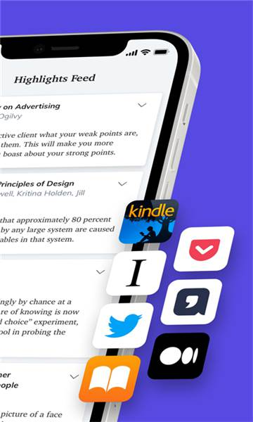

Readwise 深度用了一年：它凭什么在高亮管理这个冷门赛道里扎稳了根
高亮管理这个赛道太小众了，以至于大多数人听到这个词第一反应是「这也需要专门的工具？」。Readwise 就在这片地里深耕了快十年，把 Kindle 高亮、推文、播客片段、网页划选这些零散的「知识残片」聚在一起，用间隔重复帮你真的记住。
定位：不是笔记软件，是「高亮回收站」
我用过几款同类的工具。大厂做过类似的事——Amazon 自己有 Kindle Notes，能把标注同步到网页端；苹果在 iOS 16 之后给 PDF 加了高亮；Evernote、Notion 这种全能笔记也都能存片段。但这些工具的共同问题是：它们的高亮功能都是为各自生态服务的，不会跨边界去吃别家的东西。
Readwise 不一样。它从第一天就把自己定位成一个「高亮汇聚器」——不管你的标注来自 Kindle、Kobo、Twitter 收藏、Pocket 保存的文章、浏览器里随手划的网页、甚至播客里剪的音频片段，它都能吃进来，然后用一套统一的机制（Daily Review 间隔重复）帮你复习。这也是为什么它的官网页面永远列着一排集成 logo——不是炫技，是这产品存在的全部理由。
差异化一：来源聚合的广度，同类没有第二家做得全
先说说我实际用到的来源：
- Kindle 自动同步：这是基础款，但 Readwise 比 Amazon 自家的 Notes 多了标签、笔记和导出到 Obsidian 的能力
- Twitter 推文收藏：刷到好的 thread，分享到 Readwise 就能把整条线存进来，信息流冲走了也不怕
- 邮件导入：这是我后来才发现的冷门功能——任何 PDF、EPUB、Markdown 文件，发给专属邮箱地址就能自动解析入库。在公司电脑上看到好报告，不想手动开 App，直接转发就行
- Snipd 播客高亮：通勤路上听播客，听到洞见的地方按一下 H，音频片段 + 文字转录同步过来，之后和 Kindle 高亮混排复习

上图就是 Readwise 的 Daily Review 界面——注意看，Kindle 的书摘、Twitter 转发、播客转录片段混在一起，按间隔重复算法排好了今天该复习的内容。这个混排不是噱头，它解决的是「跨来源的知识其实在同一个脑子里，但被不同 App 割裂了」的问题。同类工具要么只做 Kindle 同步，要么只做网页划选，敢把播客和推文也拉进来的，目前就它一家。
差异化二：键盘优先的效率设计，重度用户的护城河
如果你每天要处理几十上百条高亮，鼠标点来点去是极大的浪费。Readwise 的 Web App 从根上就是为键盘设计的——按 H 高亮当前段落，T 打标签，N 写笔记，Cmd/Ctrl + K 打开命令面板跳转到任何功能。完整的 H → T → N 三连击，全程手不离开键盘就能完成标注 + 分类 + 思考的完整流程。
这看起来是个小细节，但对于重度使用场景差异巨大。同类工具要么干脆没快捷键，要么快捷键是后加的、不连贯的。而 Readwise 的键盘体验好到什么程度？我有时候在移动端会下意识去按 H 高亮——当然不行，但这种肌肉记忆本身就是对设计的褒奖。
最近还加了 Ghostreader，就是选中文本之后按 G 直接 AI 问答，整篇文档按 Shift + G 直接生成摘要。这个功能刚出来的时候我以为只是又一个 AI 集成噱头，但实际用下来发现它嵌在键盘流里特别顺——高亮一段 → 按 G → 问「这段话和我库里的哪本书观点冲突？」，整个过程不打断阅读节奏。想深入研究 Ghostreader 的完整功能、CSV 导入的列名细节以及其他边角用法，去Readwise文档翻翻就对了。

差异化三：CSV 和 Freeform，为迁移和零散场景兜底
还有两种导入方式是我在做知识迁移的时候才体会到价值的：CSV 批量导入和 Freeform 手动录入。CSV 适合从别的工具一次性倒进来大量历史高亮——列名灵活，最低只要 highlight 一列就能跑。Freeform 则是零碎救场用的：朋友圈看到一句金句想存、自己写了个突然冒出来的点子、播客里听到一段话想记下来但当时没开 Snipd——直接粘贴进来就行，不用归到某本书某个来源。
这两种方式看起来是「备用」，但恰恰是它们让 Readwise 不只是一个需要配置各种同步的重工具，而是能随时随地接住你任何碎片输入的轻容器。
取舍：为这些优势付出了什么
说完好的，也得说代价。Readwise 不是没有短板：
上手门槛偏高。刚从下载注册完面对的是一长串集成引导页——你得决定连不连 Kindle、装不装浏览器扩展、配不配 Pocket、要不要开 Twitter 同步——选多了容易乱，选少了觉得这工具好像没那么好用。我自己是先只开了 Kindle 同步用了一周，再逐个加的，体验就顺多了。
它不是一个完整的笔记工具。你可以给高亮加笔记，但那是「针对某段内容的注解」，不是让你从零开始写一篇长文。如果你需要的是 Notion/Obsidian 那种「从零构建知识体系」的能力，Readwise 帮不上忙——它只处理「已经在别处产生的内容」。好消息是它导出到 Obsidian 的接口做得很顺滑，真要写长文的时候把素材导出去就行。
主平台是 Web App，移动端是简化版。键盘快捷键只在 Web 端有，手机上就是标准的触控交互——长按打标签、双指缩放字体。这算不上缺陷，但如果你主要用手机，Readwise 的效率优势发挥不出来。
选购结论
什么样的人选 Readwise：
- 每天阅读量大、而且不只一种来源（书 + 网页 + 播客 + Twitter），需要一个统一的复习机制帮你把这些东西真正记住
- 已经在用 Obsidian 或 Notion 做笔记体系，需要一个「素材入口 + 间隔重复」层来托住，而不是把两者混在一起
- 愿意花半小时配置各种同步，之后享受每天 5 分钟 Daily Review 带来的「知识真的进脑子了」的踏实感
什么样的人不该选：
- 只是偶尔画两下高亮、不需要间隔重复的——Kindle 自带的 Notes 或者 iCloud 共享标注已经够用了
- 想要一个全能笔记应用、一站式搞定所有事情的——Notion/Obsidian/Logseq 更对路
- 只用手机、几乎不碰桌面的——Readwise 的核心效率优势在 Web 端发挥不出来，等移动端补全了再看
总结一下：高亮管理是个冷门赛道，但 Readwise 把「多来源汇聚 + 间隔重复 + 重度用户效率」这三件事做到了别家没做到的程度。如果你每年真的能读几十本书、存几百篇文章、听上百小时播客，这个工具让这些输入不再是「收集了就忘了」的数字囤积，而是真正能在脑子里扎根的东西。
这套资料在三个仓库都能拿到——GitHub上维护着原始文档，Gitee和GitCode作为国内镜像备份，方便不同网络环境下访问和检索。